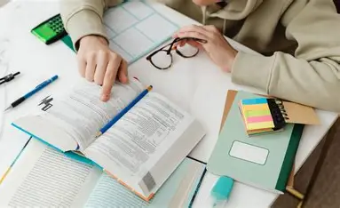
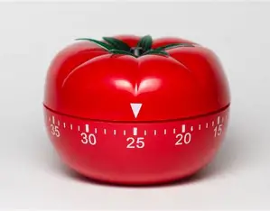

Sirven para conectar ideas visualmente y organizar conceptos clave en forma de red.
Una buena educación requiere no solo de buenos maestros, sino de métodos de aprendizaje eficientes.
El problema de la baja calificación de los estudiantes tiene que ver con múltiples factores, pero el más común es la falta de conocimientos y en como aplicar las técnicas de estudio adecuadas
Las técnicas de estudio permiten organizar la información, comprender mejor los temas y recordar lo aprendido por más tiempo.
|
Sirven para conectar ideas visualmente y organizar conceptos clave en forma de red. |
|  |
Consiste en leer subrayando, haciendo anotaciones y formulando preguntas sobre el texto. Esta técnica ayuda a comprender mejor lo leído. |
|  |
Divide el estudio en bloques de 25 minutos con descansos de 5, para mantener la concentración. |
| Técnica | Ventaja principal |
|---|---|
| Mapas mentales | Visualiza las conexiones entre ideas |
| Lectura activa | Favorece la comprensión |
| Pomodoro | Mejora la concentración |
Escríbeme a: fernandoplcnp@gmail.com